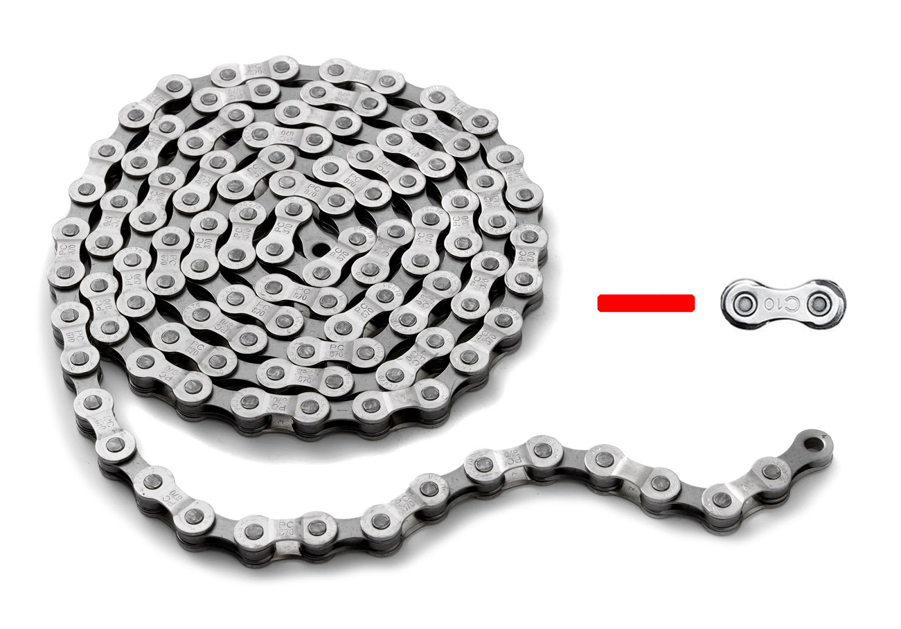

Удивительно, но факт – велосипеду 200 лет.
В 1817 году немец Карл фон Дрез из города Карлсруэ придумал нечто,
схожее с самокатом на двух колесах, который мог передвигаться при
помощи ног ездока. В следующем году он запатентовал «машину для бега»,
внешним видом напоминающую современную модель велосипеда,
однако не имеющую педалей и с деревянной рамой.
6 лет работал фон Дрез над машиной, пока в 1816 году не провел первые
ее испытания. Машина, развивавшая скорость до 10 км/ч, вызвала восторг
публики, однако городские власти к новинке отнеслись холодно.
От фон Дреза до Лармана
Разумеется, механики в разных местностях, как только к ним в руки
попадала техническая «штучка», пытались ее усовершенствовать.
Так, в маленьком городе на юге Шотландии простой работяга-кузнец
Киркпатрик Макмиллан, осмотрев немецкую модель,
позаботился о комфорте ездока и ускорении передвижения и добавил
к самокату седло и педали.
По каким-то причинам, скорее всего, об изобретении кузнеца мало кто
узнал, а сам он не пытался афишировать свое изобретение, оно не
получило достаточного распространения.
Поэтому выпускаемые до шестидесятых годов XIX столетия велосипеды
так и передвигались с помощью ног.
Следующим «первооткрывателем» был Пьер Ларман, в 1862 году
он установил на «денди хорз»
(как прозвали техническое двухколесное средство передвижения)
педали.
Во многих источниках именно Лармана называют создателем велосипеда,
хотя даже задолго до Дреза попытки придумать быстрое средство
передвижения были. Некоторые даже приписывают авторство Леонардо да
Винчи, якобы в его рисунках прослеживаются подобные формы.
Однако данные версии нежизнеспособны.
О велосипедных запчастях
Велосипедная рама
Рама велосипеда состоит из следующих частей:
— верхняя труба рамы
— нижняя труба рамы
— шарниры подвески
— линки подвески
— задний треугольник рамы
Именно за счёт рамы, все велосипедные компоненты соединяются
между собой. Рамы бывают разных размеров: от маленьких, и до больших.
Рамы делятся по трем классам:
1. Состав рамы: хром-молибденовые, алюминиевые, титановые,
карбоновые, бамбуковые.
2. Геометрия рамы: для шоссейных велосипедов, горных,
гибридных.
3. Рамы бывают с подвеской и без таковой.
Кроме того рамы можно поделить на мужские и женские.
Их главное отличие – это наличие, либо отсутствие верхней трубы рамы.
Самыми лучшими считаются карбоновые рамы.
Посчитай какая рама подойдёт именно тебе:
Твой рост
Нажми для получения ответа
Колёса
Велосипедные колёса состоят из следующих частей:
— втулки
— спицы
— камеры
— покрышки
— обода
Велосипедное колесо должно быть одновременно максимально
легким и прочным Чем выше качество компонентов колеса меньше
теряется энергии на его раскручивание и соответственно
достигается большая скорость. Колеса бывают разных диаметров,
начиная от 10 дюймов и заканчивая 29-ти.
Самый популярный диаметр 26 и 28 дюймов.
Втулка
Центральная часть колеса, за счет которого происходит
вращение колеса. К втулке присоединяется кассета, которая
обеспечивает тяговое усилие на колесо при помощи цепи и
ведущих передних звезд системы. Втулки присутствуют как
на передней так и на задней вилки велосипеда.
Крепятся они двумя способами: болтовым способом
либо эксцентриком.
Спицы
Соединительный элемент между втулкой и ободом колеса.
Спицы придают жесткость колесу. Помните, что спицы не должны
быть перетянуты ты либо не дотянуты, иначе появляется так
называемая «восьмерка» либо «яйцо». Количество спиц в колесе
колебаться от 18 до 48 штук, но чаще
всего используется 32-36 спиц.
Камера
Размещается в середине покрышки.
В камеру закачивается определенное давление, которая значится
на покрышке «от» и «до». Камера делится по таким параметрам
как: диаметр, ширина, материал изготовления, толщина стенок.
Мой вам совет — лучше брать качественные камеры именитой фирмы,
тем самым вы сэкономите себе нервы и время.
Покрышки
Ввыполняют функции безопасного и
комфортного передвижения, и предотвращает от прокола камеру.
Покрышки отличаются по диаметру, рисунку протектора,
материал изготовления.
Обод
Выполняет функции каркаса
для покрышки. Обода делятся по диаметру и ширине.
Обода бывают однослойные, двухслойная и даже трехслойные.
В основном обода изготовляют из алюминия.
Ниппель
Неотъемлемая часть камеры, в котором имеется клапан.
Есть два вида ниппелей автомобильный (Shrader) и
велосипедный (Presta). Большую популярность за универсальность
использования завоевал автомобильный ниппель.
Ниппель типа presta используется в основном на шоссейных
велосипедах. Я иногда встречаю как у велосипедиста одна
камера с автомобильным, а вторая с велосипедным ниппелем.
В этом нет ничего страшного, так как все современные
вело-насосы продаться с переходниками.
Трансмиссия велосипеда состоит из следующих частей:

Шатуны
В народном обиходе получили название «система».
Максимальное количество звезд равняется трем,
а минимальное одной. Каждая звезда имеет разное количество
зубьев самая большая звезда в среднем имеет 44-52 зуба.
Изготовляется из металла либо алюминия. Шатуны бывает разной
длины, но в среднем это значение равняется 170-175 мм.
Они крепятся к раме при помощи каретки, которая вставляется
в кареточный узел рамы велосипеда. Каретки бывает как на
насыпных так и на промышленных подшипниках. К шатунам
крепится педали.
Цепь
Цепь призвана соединять передние ведущие звезды с
задними ведомыми. Основные производители это KMS и Shimano.
Стандартная цепь имеет 116 звеньев.
Переключатели
Основная их задача заключается в том,
чтобы перебрасывать цепь с одной звезды на другую путем
расслабление либо натяжение тросика. Задний переключатель
крепится двумя способами: за счет так называемого «петуха»
либо болтом. Петух изготовляется из мягкого алюминия, и
призван спасти сам переключатель в случае удара об любой
предмет. Но я бы рекомендовал ставить защиту переключателя.
Получается недорого и сердито)
На рынке присутствуют два основных производителя
переключателей это марка Sram или Shimano.
Задний переключатель перекидывает цепь по звездам на кассете,
а передней на системе (ведущие звезды).
Амортизационная вилка
Подвеска создана с целью гасить колебания, которые вызваны
неровным дорожным покрытием. Стоит сказать, что подвеска
подвеске рознь, и если Вы собираетесь покупать дешёвый
велосипед до 100 долларов, и на нем установлена передняя
подвеска (тип хард-тейл), то, скорее всего такая подвеска
добавит Вам проблем в процессе эксплуатации. Хорошие передние
амортизаторы марки Rock Shoх стоят от 150 долларов.
А если же Вы будете в основном ездить по асфальтовому покрытию,
то берите велосипед с жесткой рамой.